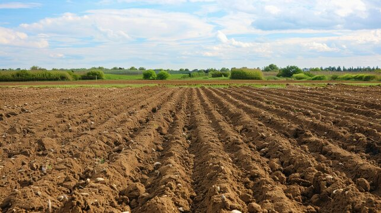
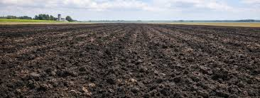
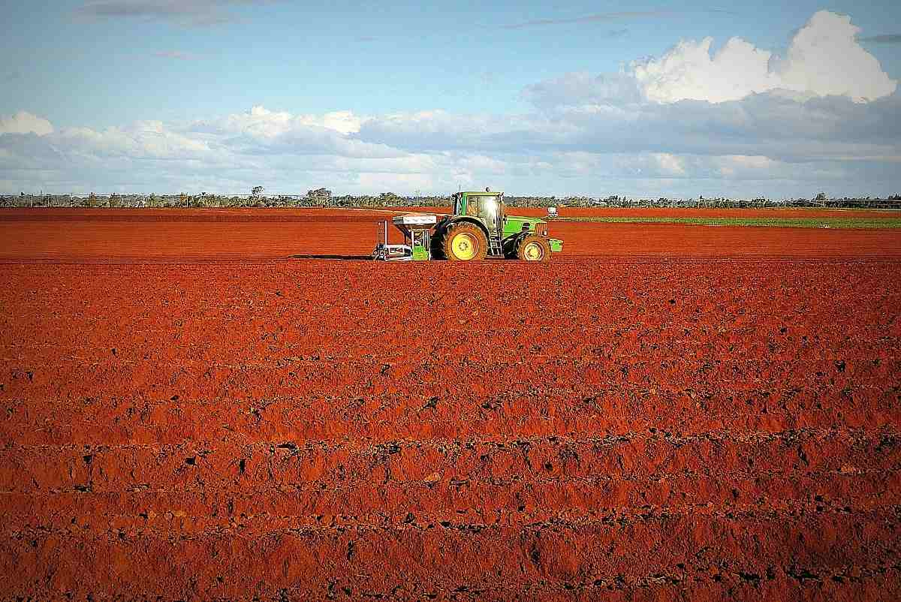
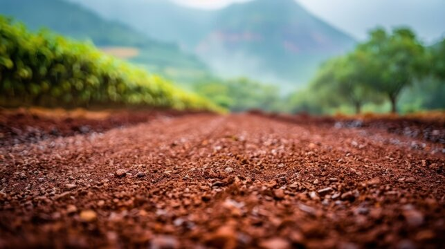
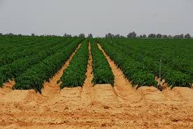
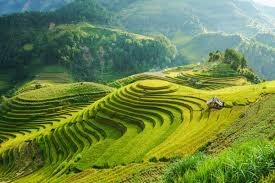

🌱 Soil Types & Information
Alluvial Soil

- Colour: Light grey / yellowish
- Fertility: Very high
- Found in: near river basins like Ganga, Brahmaputra
- Crops: Rice, wheat, sugarcane, jute
Black Soil

- Colour: Black
- Fertility: High (rich in minerals, holds moisture)
- Found in: Maharashtra, Madhya Pradesh, Gujarat
- Crops: Cotton, soybean, groundnut
Red Soil

- Colour: Red (due to iron)
- Fertility: Low to medium
- Found in: Tamil Nadu, Karnataka, Andhra Pradesh
- Crops: Millets, groundnut, pulses
Laterite Soil

- Colour: Red-brown
- Fertility: Low
- Found in: Kerala, Odisha, Assam
- Crops: Tea, coffee, rubber (with fertilizers)
Desert Soil

- Colour: Sandy, pale brown
- Fertility: Low
- Found in: Rajasthan
- Crops: Bajra, barley (with irrigation)
Mountain Soil

- Colour: Brown to dark brown
- Fertility: Medium (rich in humus in forest areas)
- Found in: Himalayas
- Crops: Tea, coffee, spices, fruits
🌾 Soil Nutrients Importance
Soil nutrients like Nitrogen (N), Phosphorus (P), and Potassium (K) are very important for plant growth.
- Nitrogen helps in leaf growth.
- Phosphorus helps in root development.
- Potassium improves overall plant health.
💧 Soil Moisture
Moisture level in soil affects crop yield. Too much or too less water can damage crops.
🌡️ Soil Temperature
Different crops require different temperature ranges to grow properly.
📌 Conclusion
Understanding soil type and nutrients helps farmers select the best crop and increase productivity.